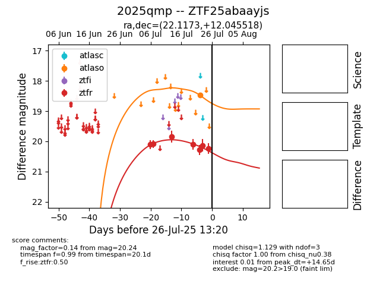

Target 2025qmp at 2025-07-26 13:20, see:
FINK: fink-portal.org/2025qmp
Lasair: lasair-ztf.lsst.ac.uk/objects/2025qmp
ALeRCE: alerce.online/object/2025qmp
TNS: wis-tns.org/object/2025qmp
YSE: ziggy.ucolick.org/yse/transient_detail/2025qmp
alt names
ZTF25abaayjs (ztf,fink)
2025qmp (tns,yse)
coordinates:
equatorial (ra, dec) = (22.1173,+12.04552)
galactic (l, b) = (137.0430,-49.80891)
photometry
last atlaso=18.47, ztfr=20.24
1 atlaso, 7 ztfr detections
